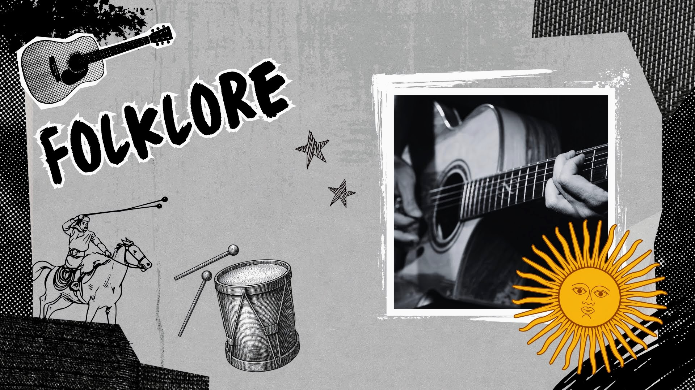
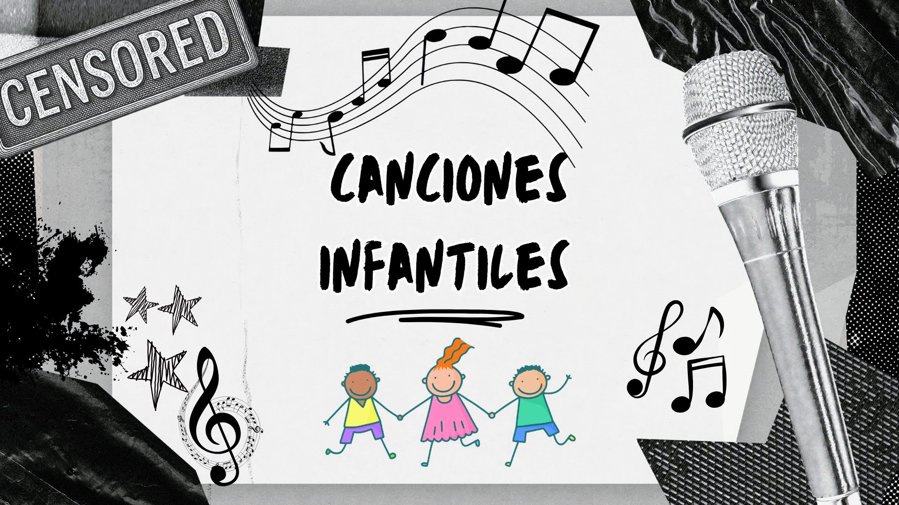

La Censura Musical durante la Dictadura
Durante la última dictadura en Argentina, el control sobre la cultura fue una herramienta clave del régimen. A través de organismos como el COMFER, se prohibieron canciones que pudieran "alterar el orden", cuestionar la autoridad o transmitir ideas consideradas peligrosas.
La música, sin embargo, se convirtió en un espacio de resistencia simbólica. Muchas canciones fueron censuradas no solo por su contenido explícito, sino también por interpretaciones metafóricas o por la postura política de sus artistas.
La censura musical durante la dictadura no solo buscó eliminar contenidos "peligrosos", sino también controlar la forma en que las personas pensaban, sentían y se expresaban. Muchas canciones fueron prohibidas no por lo que decían explícitamente, sino por lo que podían hacer pensar.
Con el tiempo, estas obras se transformaron en símbolos de resistencia y memoria. Hoy forman parte del patrimonio cultural argentino y permiten reflexionar sobre la importancia de la libertad de expresión y la necesidad de defenderla.
Rock Nacional
"Viernes 3 AM"
Charly GarcíaLa canción aborda el suicidio de manera directa y con un tono existencial oscuro. En el contexto de la dictadura, este tipo de contenido era considerado "desmoralizante", ya que el régimen buscaba proyectar una imagen de orden y estabilidad. Se temía que promoviera pensamientos negativos o cuestionamientos individuales.
"Me gusta ese tajo"
Pescado RabiosoFue censurada por su lenguaje explícito y referencias sexuales. La dictadura también ejercía control moral sobre los contenidos culturales, prohibiendo aquello que consideraba "inmoral" o contrario a los valores tradicionales.
"La cultura es la sonrisa"
León GiecoAunque no es abiertamente política, su mensaje sobre la cultura como forma de expresión libre fue interpretado como una defensa de la libertad frente a la censura. Esto la volvió sospechosa para el régimen.
"Ayer nomás"
Los Gatos / MorisLa letra expresa desencanto social y una mirada crítica sobre la realidad. En un contexto de represión, cualquier alusión a la pérdida de libertades o al malestar social era considerada subversiva.
"Canción de amor para Francisca"
León GiecoInterpretada como una metáfora sobre la pérdida, la ausencia y el dolor, temas que podían vincularse con las desapariciones forzadas. La ambigüedad poética generaba sospecha en los censores.
"Tema de los mosquitos"
León GiecoUtiliza metáforas que podían leerse como críticas al poder o a la violencia. La dictadura solía censurar canciones con lenguaje simbólico por temor a mensajes ocultos.

Folklore
"Como la cigarra"
Mercedes Sosa (de María Elena Walsh)Su letra habla de renacer después de la muerte ("tantas veces me mataron..."), lo que la convirtió en un símbolo de resistencia. Además, Mercedes Sosa fue perseguida y exiliada, lo que reforzó la censura sobre su repertorio.
"La guerrillera" / "Estamos prisioneros" / "Carceleros"
Horacio GuaranyEstas canciones contienen referencias directas a la represión, la cárcel y la lucha política. Por su contenido explícito, fueron consideradas peligrosas y directamente subversivas.
"Cambalache"
Enrique Santos DiscépoloAunque es anterior a la dictadura, su fuerte crítica a la corrupción y a la decadencia moral ("todo es igual, nada es mejor") fue vista como incompatible con el discurso oficial que intentaba legitimar el régimen.
Rock Internacional
"Cocaine"
Eric ClaptonFue censurada por considerarse una apología del consumo de drogas, algo que el régimen buscaba erradicar por razones morales y de control social.
"Another Brick in the Wall (Part 1)"
Pink FloydSu crítica a las instituciones educativas y a la autoridad en general se interpretó como un mensaje anti-sistema, lo cual resultaba inaceptable para un gobierno autoritario.
"Da Ya Think I'm Sexy?"
Rod StewartCensurada por su contenido sexual explícito. La dictadura también imponía normas estrictas sobre la moral pública.
"Tie Your Mother Down"
QueenSu lenguaje y actitud desafiante hacia figuras de autoridad fueron considerados inapropiados.

Canciones Infantiles
"Gilito de Barrio Norte"
María Elena WalshAunque parece humorística, contiene una crítica social sutil. María Elena Walsh fue una figura crítica del régimen, lo que generó vigilancia sobre su obra.
"Doña Fiaca"
Eladia BlázquezLa historia de una mujer que se niega a cumplir con las exigencias sociales fue interpretada como un cuestionamiento al orden establecido.
"El twist del mono liso"
María Elena WalshAunque es una canción infantil, formaba parte del repertorio de una autora considerada incómoda para el poder, lo que derivó en censura indirecta.